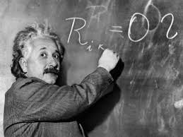
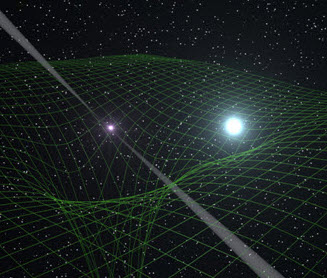

|  |
|
Mayyasi, Alex. (16 July 2013). Einstein teaching at the blackboard. [Photograph]. Retrieved from: http://priceonomics.com/why-dont-we-teach- students-how-to-learn/ |
"Einstein always appeared to have a clear view of the problems of physics and the determination to solve them. He had a strategy of his own and was able to visualize the main stages on the way to his goal. He regarded his major achievements as mere stepping-stones for the next advance," says an official source.
Early in his scientific endeavors, Einstein realized the major gap between mechanical laws and electromagnetic field laws as he developed the special theory of relativity to bridge it to Newtonian mechanics. Next, he dug into problems of statistical mechanics and how this connected into quantum theory, resulting in his explanation of the Brownian molecule movement. Laying the building blocks of photon light theory, he explored the heating abilities of low-radiation light.
While he was in Berlin, Einstein connected the theories of gravity with special relativity, publishing a paper on the general theory of relativity in 1916. During the Roaring Twenties of America, Einstein studied "unified field theories" while working on the probability-based view of the quantum theory. Additionally, he investigated the quantum theory in relation to a monatomic gas.
|
ImgKid. (n.d). Molecules. [Computer-rendered image]. Retrieved from: http://imgkid.com/3d-molecules.shtml |
His official scientific accomplishments include the Special Theory of Relativity published in 1905, General Theory of Relativity in 1916, and the Investigations on Theory of Brownian Movement I in 1926. Einstein gained doctorates in science, medicine, and philosophy from prestigious European and American universities. While lecturing, he gained fellowships to science communities. He also received awards: the Copley Medal in 1925 and the Franklin Medal in 1935.
|  |
|
Technology. (30 April 2013). Space-Time Curvature. [Computer-rendered image]. Retrieved from: http://www.technology.org/2013/04/30/a- heavyweight-for-einstein/ |
While his official and honorary achievements span wide, Einstein will be remembered most poignantly for his quiet courage and confidence in solving difficult problems - whether they be puzzles or relativity theory - and his tenacity in discovering the fundamental mysteries underlying our world.